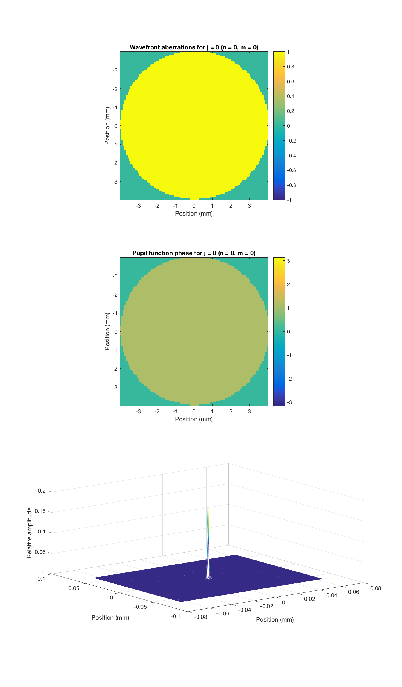
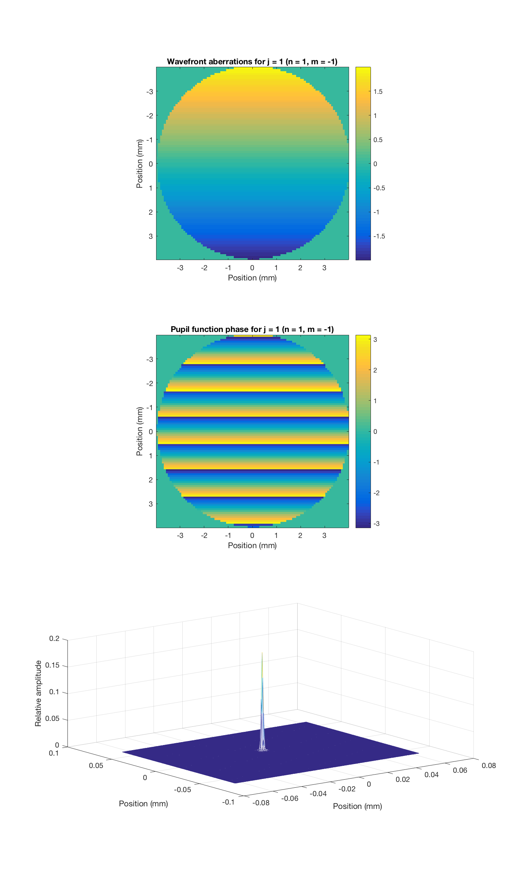
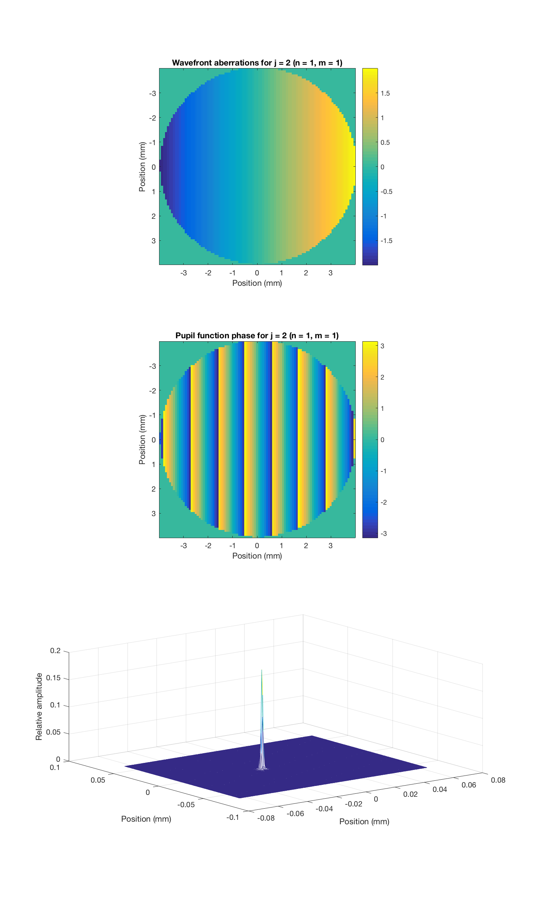
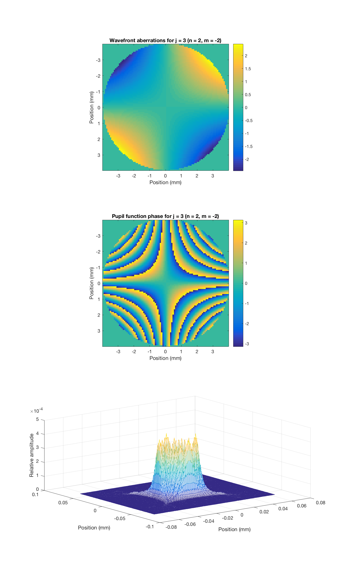
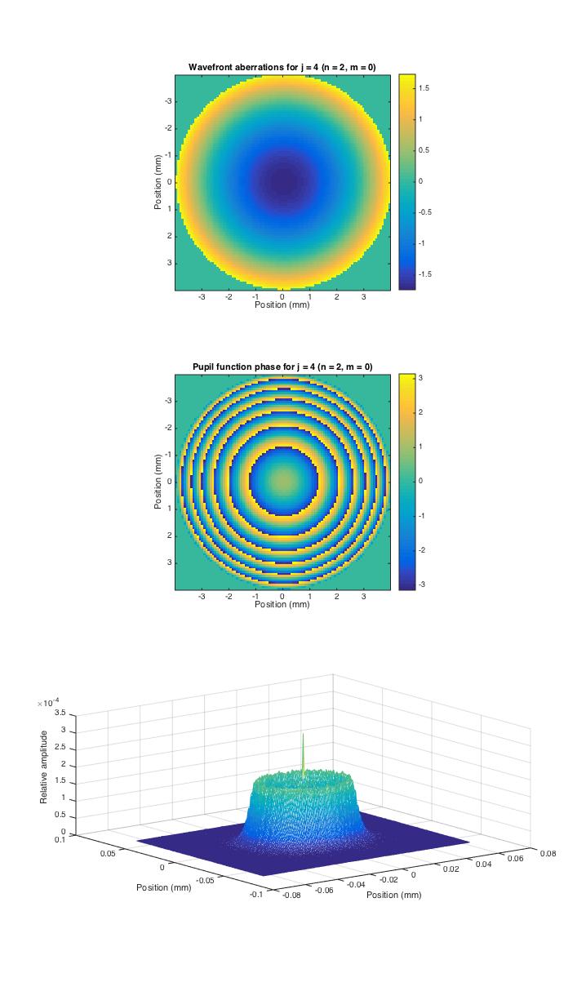
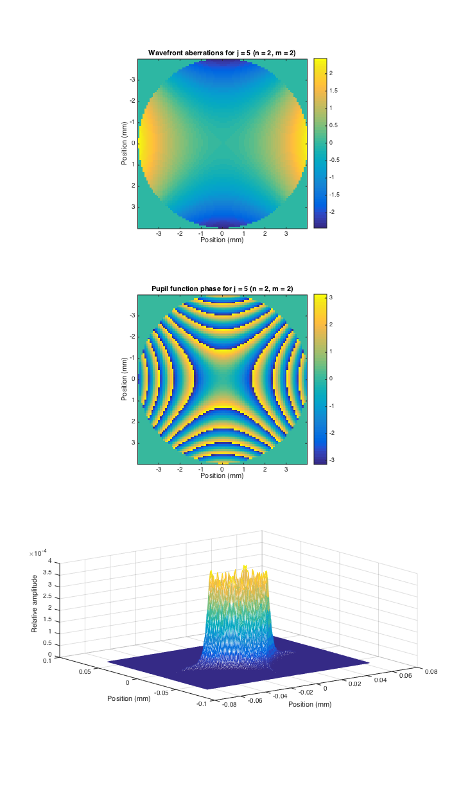
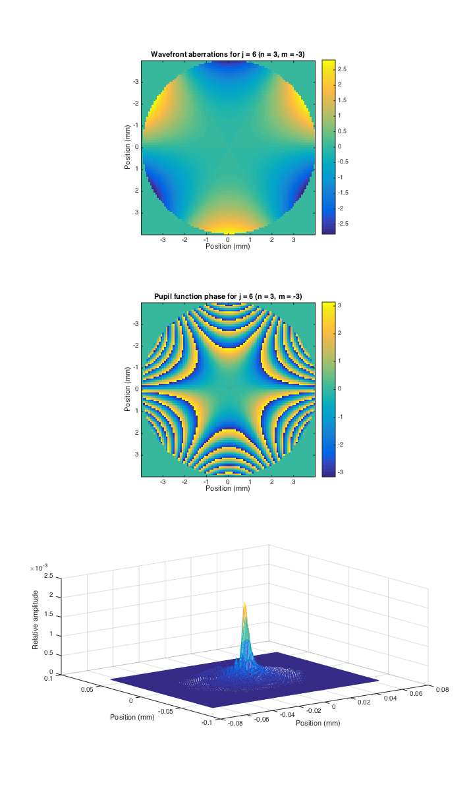
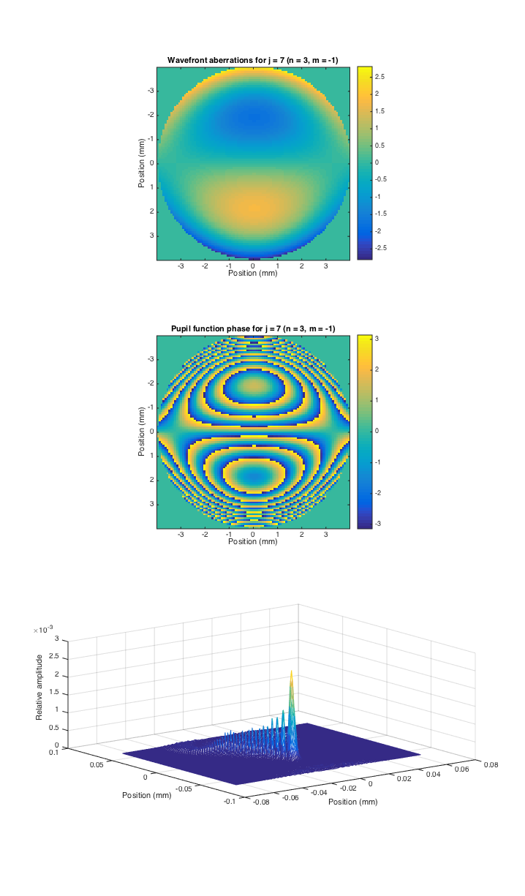
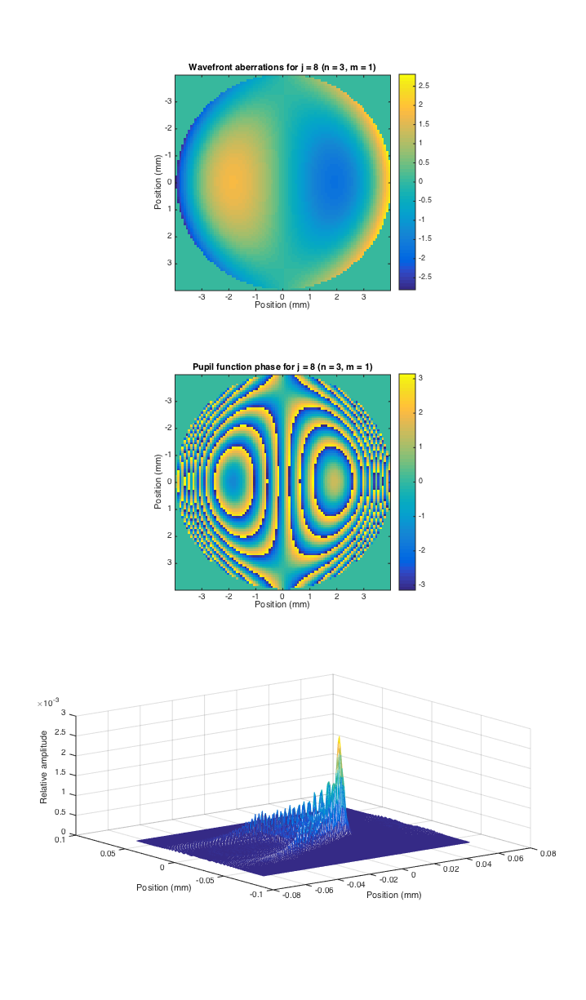
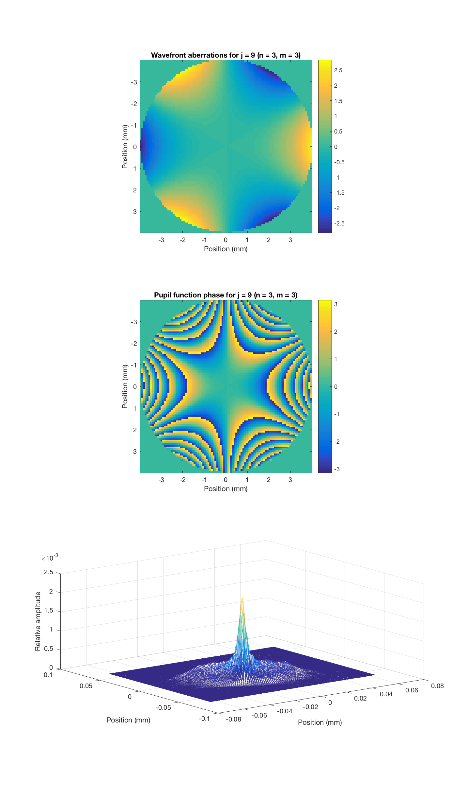

Contents
function varargout = v_wvfZernkePolynomials(varargin) % % Test that single Zernike coeffs produce correct wavefront aberrations. % % Make plots of the wavefront aberrations we get for single Zernike coefficients. % These ought to match up with standard pictures of the Zernike pyramid. % % The problem is that pictures easily availalbe on the web don't match up with % each other. Compare for example % http://en.wikipedia.org/wiki/Zernike_polynomials (blue is postive) % http://www.telescope-optics.net/monochromatic_eye_aberrations.htm (red is positive) % http://www.traceytechnologies.com/resources_wf101.htm (green is positive) % % Even given the color reversals, the three sets don't agree. I suspect that the % differences have to do with the coordinate system convention chosen (z into the % (eye or out of the eye, x horizontal or vertical, etc.). % % We do match what is at http://www.traceytechnologies.com/resources_wf101.htm, once you % flip the sign of the color coding in the pictures (and map their green to our blue). % % Our defocus picture does manifestly match the formula given in the OSA standard, % where the radial dependency goes as (2*rho^2-1). This is clearly negative for rho = 0, as % we obtain. Also, as I read the general formula for the Zernike's the OSA formula matches % it for the defocus case (and presumably for others too, I didn't check.) % % 7/31/12 dhb Wrote it. % 8/12/15 dhb UnitTestToolbox'ize varargout = UnitTest.runValidationRun(@ValidationFunction, nargout, varargin); end
Function implementing the isetbio validation code
function ValidationFunction(runTimeParams)
%
Initialize
close all; ieInit;
Some informative text
UnitTest.validationRecord('SIMPLE_MESSAGE', 'Validate wavefront individual Zernike coefficients.');
Make plots of various pupil functions and their respective
point-spread functions for different Zernike polynomials of 1st through 3rd radial orders (OSA j indices 1 through 9).
Each time through the loop we see the effect of wiggling one coefficient.
In this loop, we plot the wavefront aberrations (measured in microns), the pupil function phase (radians), and the PSF.
The wavefront aberration plots we get match those http://www.telescope-optics.net/monochromatic_eye_aberrations.htm except for defocus, where we have opposite sign.
wvf0 = wvfCreate; wvf0 = wvfSet(wvf0,'calculated pupil',wvfGet(wvf0,'measured pupil','mm')); pupilfuncrangeMM = 4; wList = wvfGet(wvf0,'calc wave'); jindices = 0:9; maxMM = 4; for ii = jindices vcNewGraphWin([],'tall'); insertCoeff = 1; wvf = wvfSet(wvf0,'zcoeffs',insertCoeff,ii); wvf = wvfComputePSF(wvf); [n,m] = wvfOSAIndexToZernikeNM(ii); subplot(3,1,1); wvfPlot(wvf,'2d wavefront aberrations space','mm',[],pupilfuncrangeMM,'no window'); title(sprintf('Wavefront aberrations for j = %d (n = %d, m = %d)',ii,n,m)); subplot(3,1,2); wvfPlot(wvf,'2d pupil phase space','mm',wList,pupilfuncrangeMM,'no window'); title(sprintf('Pupil function phase for j = %d (n = %d, m = %d)',ii,n,m)); subplot(3,1,3); wvfPlot(wvf,'2d psf space','mm',wList,maxMM,'no window'); % Save out what it does today % % Little bit of nonsense here to avoid a "-" in the identifier string, % yet still distinguish plus from minus. if (m < 0) mStr = ['m' num2str(abs(m))]; else mStr = num2str(m); end if (n < 0) nStr = ['m' num2str(abs(n))]; else nStr = num2str(n); end UnitTest.validationData(sprintf('wvf_%s_%s',mStr,nStr), wvf); end         
end